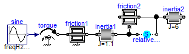
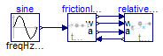

Test of two coupled Coulomb friction elements leading to a mixed system of equations
Information
Extends from Modelica.Icons.ExamplesPackage (Icon for packages containing runnable examples).
Package Content
| Name |
Description |
 Reference Reference
|
Reference solution in pure Modelica |
| WithFMUsReference
|
Reference solution in pure Modelica using exactly the same structuring as in Model WithFMUs |
| WithFMUs
|
Solution with FMUs |
 FMUModels FMUModels
|
For all models in this package an FMU must be generated |
Reference solution in pure Modelica

Information
The parameters are selected so that both friction elements are partly
sliding (mode = +/- 1) or partly stuck (mode = 0). Plot the following variables:


Extends from Modelica.Icons.Example (Icon for runnable examples).
Modelica definition
model Reference
"Reference solution in pure Modelica"
extends Modelica.Icons.Example;
Modelica.Mechanics.Rotational.Components.Inertia inertia1(
J=1.1,
phi(start=0, fixed=true),
w(start=0, fixed=true));
Modelica.Mechanics.Rotational.Components.Inertia inertia2(J=6);
Modelica.Mechanics.Rotational.Sources.Torque torque;
Modelica.Blocks.Sources.Sine sine(freqHz=1.2, amplitude=2);
Modelica.Mechanics.Rotational.Components.BearingFriction friction1(
useSupport=false);
Modelica.Mechanics.Rotational.Components.BearingFriction friction2(
useSupport=true);
Modelica.Mechanics.Rotational.Components.RelativeStates relativeStates(
stateSelect=StateSelect.always,
phi_rel(fixed=true),
w_rel(fixed=true));
equation
connect(sine.y, torque.tau);
connect(torque.flange, friction1.flange_a);
connect(friction1.flange_b, inertia1.flange_a);
connect(inertia1.flange_b, friction2.support);
connect(friction2.flange_b, inertia2.flange_a);
connect(inertia1.flange_b, relativeStates.flange_a);
connect(relativeStates.flange_b, inertia2.flange_a);
end Reference;
Reference solution in pure Modelica using exactly the same structuring as in Model WithFMUs

Information
Extends from Modelica.Icons.Example (Icon for runnable examples).
Modelica definition
model WithFMUsReference
"Reference solution in pure Modelica using exactly the same structuring as in Model WithFMUs"
extends Modelica.Icons.Example;
Modelica.Blocks.Sources.Sine sine(freqHz=1.2, amplitude=2);
FMUModels.FrictionInertia frictionInertia;
FMUModels.RelativeFrictionInertia relativeFrictionInertia;
equation
connect(sine.y, frictionInertia.tauDrive);
connect(frictionInertia.phi, relativeFrictionInertia.phi);
connect(frictionInertia.w, relativeFrictionInertia.w);
connect(frictionInertia.a, relativeFrictionInertia.a);
connect(relativeFrictionInertia.tau, frictionInertia.tau);
end WithFMUsReference;
Solution with FMUs
Information
Extends from Modelica.Icons.Example (Icon for runnable examples).
Modelica definition
Automatically generated Fri Apr 25 16:23:12 2014.
 FMITest.MixedSystems.TwoInertiasWithFriction.Reference
FMITest.MixedSystems.TwoInertiasWithFriction.Reference